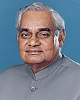
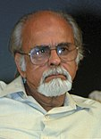

-
15 August 1947 -27 May 1964†

Jawahar Lal Nehru
Jawaharlal Nehru was born on 14 November 1889 in Allahabad in British India. His father, Motilal Nehru (1861–1931), a self-made wealthy barrister who belonged to the Kashmiri Pandit community.
Period 16 years, 286 days
-
27 May 1964-9 June 1964
Gulzari Lal Nanda
Gulzarilal Nanda (4 July 1898 – 15 January 1998)[1][2] was an Indian politician and economist who specialised in labour issues.
Period 13 days
-
9 June 1964-11 January 1966†
Lal Lal_Bahadur_Shastri_
Shastri was born on 2 October 1904 at the home of his maternal grandparents in a Kayastha family.
Period 1 year, 216 days
-
11 January 1966-24 January 1966
Gulzari Lal Nanda
Gulzarilal Nanda (4 July 1898 – 15 January 1998)[1][2] was an Indian politician and economist who specialised in labour issues.
Period 13 days
-
24 January 1966-24 March 1977
Indira Gandhi
Indira Gandhi was born Indira Nehru, into a Kashmiri Pandit family on 19 November 1917 in Allahabad
Period 11 years, 59 days
-
24 March 1977-28 July 1979
Morarji Desai
Morarji Desai was born into a Gujarati Anavil Brahmin family.[5][6] His father's name was Ranchhodji Nagarji Desai and his mother's name was Vajiaben Desai.
Period 2 years, 126 days
-
28 July 1979-14 January 1980
Charan Singh
Charan Singh's ancestor was a prominent leader of the Indian Rebellion of 1857, Raja Nahar Singh of Ballabhgarh (in present-day Haryana).
Period 170 days
-
14 January 1980-31 October 1984†
Indira Gandhi
Indira Gandhi was born Indira Nehru, into a Kashmiri Pandit family on 19 November 1917 in Allahabad
Period 4 years, 291 days
-
31 October 1984-2 December 1989
Rajiv Gandhi
Rajiv Gandhi was born in Bombay on 20 August 1944 to Indira and Feroze Gandhi.
Period 5 years, 32 days
-
2 December 1989-10 November 1990[NC-
Vishwanath Pratap Singj
Vishwanath Pratap Singh (25 June 1931 – 27 November 2008), shortened to V. P. Singh, was an Indian politician
Period 343 days
-
10 November 1990-21 June 1991[RES]
Chandra Shekhar
Singh was born on 25 June 1931,[6] the third child of the Hindu Rajput Zamindar family.
Period 223 days
-
21 June 1991-16 May 1996
P.V Narasimha Rao
Pamulaparthi Venkata Narasimha Rao (28 June 1921 – 23 December 2004), popularly known as P. V. Narasimha Rao
Period 4 years, 330 days
-
16 May 1996-1 June 1996[RES]
Atal Bihari Vajpayee
His activism started in Gwalior with Arya Kumar Sabha, the youth wing of the Arya Samaj movement, of which he became the general secretary in 1944.
Period 16 days
-
16 May 1996-1 June 1996[RES]
H.D Deve Gowda
H. D. Deve Gowda was born on 18 May 1933 in Haradanahalli, a village in Holenarasipura Taluk, of the erstwhile Kingdom of Mysore (now in Hassan, Karnataka)
Period 324 days
-
21 April 1997-19 March 1998
Inder Kumar Gujral
Gujral resigned from the Indian National Congress party in the 1980s. Then he joined the Janata Dal
Period 332days
-
19 March 1998-19 March 1998
Atal Bihari Vajpayee
His activism started in Gwalior with Arya Kumar Sabha, the youth wing of the Arya Samaj movement, of which he became the general secretary in 1944.
Period 6 years, 64 days
-
22 May 2004-26 May 2014
.jpg)
Manmohan Singh
Singh was born to Gurmukh Singh and Amrit Kaur on 26 September 1932, in Gah, Punjab, British India, into a Sikh family
Period 10 years, 4 days
-
26 May 2014-Incumbent
Narendra Modi
In June 1975, Prime Minister Indira Gandhi declared a state of emergency in India which lasted until 1977
Period 8 years, 348 days